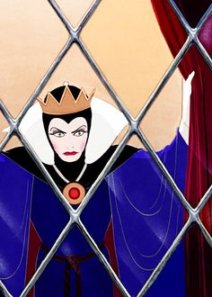
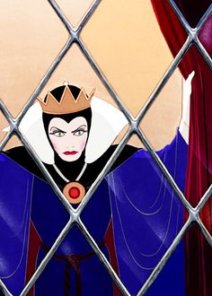

There once was a lad named Little Red Riding Norris. His mother had sent him through the forest to his grandmother's house. Along the way, he looked around, and realized this was the wrong story. As a result, he roundhouse kicked the writer, resulting in the writer's death. Shortly after, a new writer was hired to take the dead one's place.
Once upon a time, a queen sat at her windowsill, sewing and she accidentally pricked her finger. Watching the blood drop upon the snow resting on her ebony window frame, she sighed, "Oh, I wish I could have a daughter whose skin was white as snow, whose lips were red as blood and whose hair was black as ebony." Boy, she was disappointed. She soon became pregnant, and nine months later, she gave birth to a boy whose hair was brown, and whose eyes were blue, and whose skin was white. The mother was so disappointed and shocked, she began to cry. Insulted, the baby stood up, walked to his mother, and roundhouse kicked her in the face. She died immediately. His father was quite amazed at the feat. He had taken his first two steps! So he picked him up, rocked him a few times, and chose to name him "Chuck Norris".
Several months later, Chuck's father met another woman, and two years later, married her. However, this woman was very vain. She possessed a magical mirror, and every day she would ask the same question: "Mirror, mirror, on the wall, who is the fairest of them all?" And of course, the mirror, not truly magical, but being a suck-up, said: "You are the fairest, my queen."
However, one day, when Chuck Norris had turned 17 years old, the mirror gave her a different answer. "Queen you are full fair, 'tis true," It said, "but Chuck Norris is fairer than you, and much stronger at that."
The stepmother grew angry, and ordered a huntsman to take Chuck Norris out to the woods. She demanded that the huntsman kill Chuck Norris, and bring back his heart for the stepmother to devour. However, when the huntsman and Chuck went out into the woods, the huntsman returned in a body bag. Chuck Norris had surprised the huntsman, by punching him with the fist hidden under his beard. Knowing something was amiss, young Chuck retreated deeper into the woods to wait.
While in the forest, he met seven dwarves. The dwarves allowed him into their house, but in return he had to act as their bodyguard against vicious monsters. Meanwhile, the stepmother had just received the body bag containing the huntsman, and was enraged. She stormed off to her private quarters, and cast a magic spell. No one knew she was also a warlock in disguise, plotting to take over the kingdom. The spell she cast was one of scrying, as she attempted to find the location of Chuck Norris. She found him out in a cottage living with several dwarves. Now she knew, judging by the corpse of the huntsman, that she could not take Chuck Norris lightly. So she used a rose from the old queen's tomb to conjure a huge vicious snake, and sent it out to the woods.
By the time the snake had found Chuck and the dwarves, they were out mining for ore. Chuck Norris, with his amazing beard, sat outside the mine, waiting, for Chuck does not sleep, he waits. The snake slithered up to Chuck, and bit him. After days and days of constant, excruciating pain, the snake died. So the next thing the stepmother did, was find an apple, one of Chuck's favorite foods. She placed it in her dark cauldron, along with the petals of another rose from the tomb. After about five minutes, she took the apple out. It glistened perfectly, temptingly. It seemed to be the most delicious apple ever to be seen. However, little would Chuck Norris know that the apple had been poisoned with magic fed through it by the rose.
The following morning, Chuck was hacking some firewood down outside the cottage. The dwarves had gone to Wal-Mart for some food supplies, and did not need his protection for that time. It was the perfect opportunity. The stepmother-warlock silently trudged through the forest to the cottage, and found Chuck. She produced the apple to him, asking if he would like one after a hard day's work. Parched, Chuck did not think, and took a bite, and fell asleep! Cackling, the stepmother-warlock snuck off. Hours later, the dwarves returned to find Chuck on the forest floor. Despite their attempts to resurrect him, he did not wake, and he was presumed dead.
Years passed, and despite the passing of time, Chuck did not age. The dwarves kept silent vigil over his resting place the whole time. One day, a young knight was passing through a forest. He was a rather unusual knight. He walked on all fours, had blue froglike skin, and had fins on the top of his head and over his cheeks. His armor was rather basic, as it did only cover the vital parts of his body, and he carried the tiniest sword you could imagine at his side. He went by the name of "Mudkip." Mudkip found the resting place of Chuck. The young man, now well over twenty years old, but seemingly no younger than 18, rested in a glass case on a raised dais. A dwarf knelt before the grave, muttering silent prayers. Mudkip approached the dwarf, shouting 'Mudkip!' This proclamation startled the dwarf, and he turned to see the small knight before him. The dwarf asked him what he was about, and all Mudkip could say was his name several times. Yet somehow, the dwarf understood what he was saying. He looked to the glass case behind him warily, then nodded to Mudkip the knight. The dwarf removed the case, and Mudkip promptly hopped up on Chuck, bouncing on his chest several times, shouting "Mudkip!" all the while. After what seemed like a year, which was in reality five minutes at most, Chuck Norris awoke, coughing up the apple he had eaten. Chuck stood up, thanked mighty Mudkip for his efforts, and explained what had happened to him. His stepmother was indeed a warlock, who had poisoned him with a delicious apple. Driven by revenge, Chuck asked Mudkip to join him as he stormed the castle of his family, and slew the queen. Mudkip agreed, and as soon as night fell, the two entered the castle. Chuck roundhouse kicked the guards, and then ran up the several flights of stairs to his stepmother's room, in the tallest tower of the castle. There, they found the stepmother, completely awake and prepared for the attempted assassination. She cast a magic spell on another rose, and ate its pedals. This turned her into a terrible monster. It was a large mouth, with bulging eyes attached to the upper lip.
Mudkip promptly attempted to tackle the warlock. However, the monster blasted a laser, bellowing, "SHOOP DA WHOOP!!" Mudkip was quickly blasted out a window, and crashed into the lake below. He swam to the shore, safe, but was unable to climb back to the top of the castle in time.
The monster that was the stepmother turned on Chuck, who froze in place, tense and ready to strike. The warlock began to charge the laser in its mouth, and Chuck entered a combat position. The laser fired out of the warlock's mouth. Chuck Norris waited until it was close, then roundhouse kicked the laser and--
(The ensuing explosion destroyed the rest of this story.)
 
